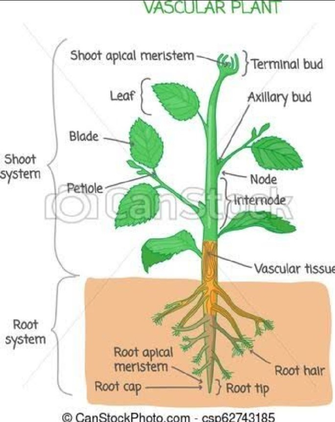
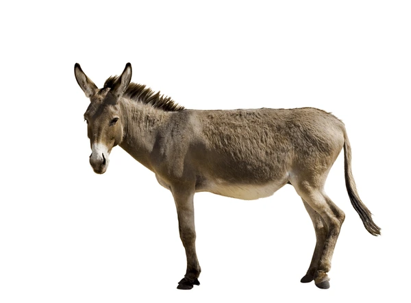

A plant is a living thing that makes its own food from sunlight and usually has leaves, stems, and roots.

An animal is a living thing that eats food for energy and can move around on its own.
| PLANTS | ANIMAL |
|---|---|
| 1. Make their own food using sunlight. | 1. Eat food for energy.. |
| 2. Usually do not move from place to place. | 2 Can move around freely. |
| 3. Plants: Have cell walls and green parts called chloroplasts. | 3. Animals: Do not have cell walls or chloroplasts. |
| 4. Keep growing throughout their life. | 4. Stop growing when they reach a certain size. |
| 5 Can reproduce by seeds or other parts like cuttings. | 5 Mostly reproduce by giving birth or laying eggs. |
| 6. Store energy as starch. | 6. Store energy as fat and glycogen. |
| 7. Take in carbon dioxide and give out oxygen during the day. | 7. Take in oxygen and give out carbon dioxide all the time. |
| 8. Respond slowly to their environment (like growing towards light). | 8. Respond quickly to their environment (like moving away from danger). |
| 9. Have tissues for transporting water and nutrients. | 9. Have muscles and nerves for movement and sensing the world. |